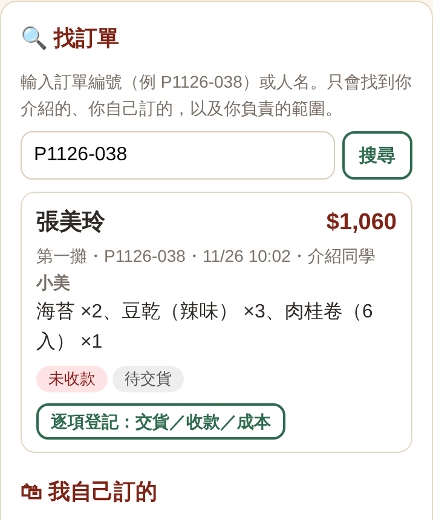
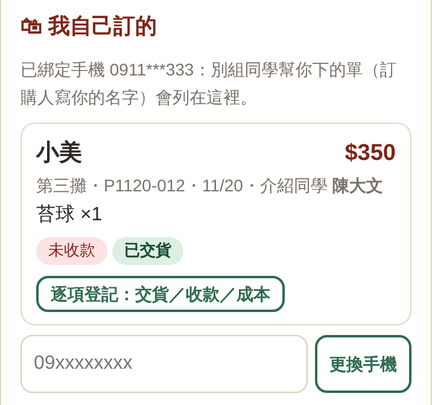
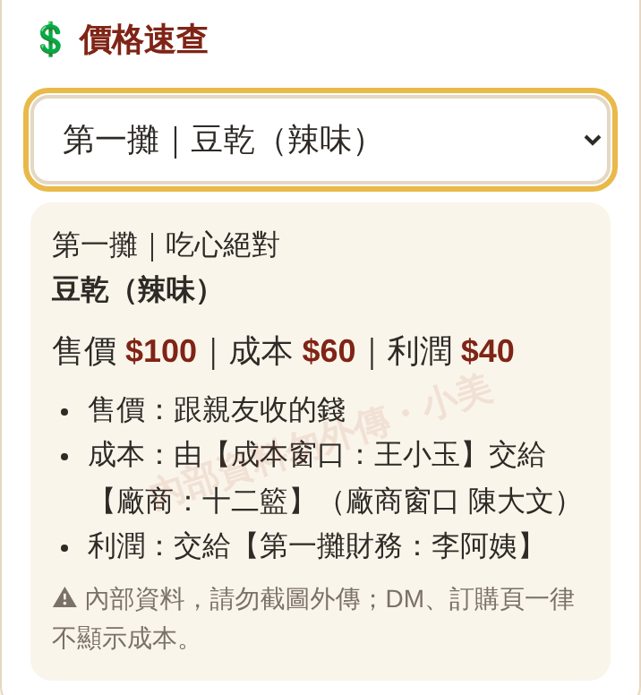
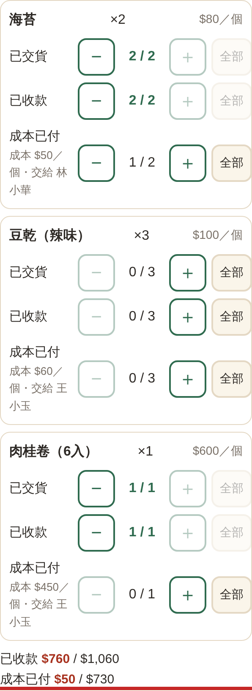
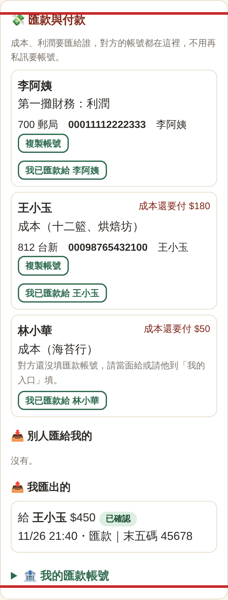
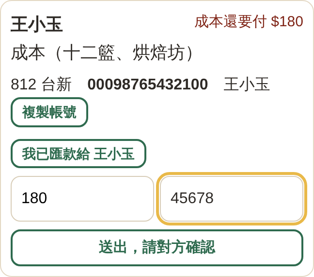
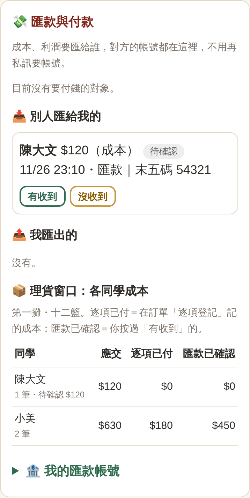

1. 找訂單
每位同學- 在「🔍 找訂單」輸入訂單編號（例 P1126-038）或名字。
- 按「搜尋」。
- 找到後可以直接按「逐項登記」。

只找得到你介紹的、你自己訂的，以及你負責的範圍（財務、組長、理貨窗口）。別人的單會顯示「查無或無權限」，這是正常的。
2. 我自己訂的
自己也有下單的同學- 在「🛍 我自己訂的」填你下單時留的手機，按「綁定手機」。
- 重新整理後，別組同學幫你下的單（訂購人寫你的名字）就會出現。

要「名字」和「手機」都對得上才會出現，所以綁別人的手機也看不到別人的單。
3. 價格速查
每位同學（內部資料）- 在「💲 價格速查」選商品。
- 看售價、成本、利潤，以及成本交給誰、利潤交給誰。

卡片上有「內部資料勿外傳」浮水印。請不要截圖傳到親友群組；DM、訂購頁、LINE 貼文一律不寫成本。
4. 逐項登記：交貨、收款、成本
介紹同學（財務、組長也可以）- 在訂單卡片按「更多」→「逐項登記：交貨／收款／成本」。
- 每樣商品有三排：已交貨、已收款、成本已付。按「＋」「−」或「全部」，按一下就存好。
- 下面會自動加總「已收款 $／應收 $」「成本已付 $／應付 $」。

例子：張美玲訂海苔 2、豆乾 3、肉桂卷 1。海苔交了也收錢了，成本先付 1 包；肉桂卷拿到也收錢了，但成本還沒付；豆乾都還沒。照上圖這樣按，大家一看就知道。
每樣都收齊時，會出現「全部收齊 → 整單標已收」按鈕，按兩下就把整筆標成已收。整筆已經標「已收」或「已交貨」的單，每樣都算完成，不用再逐項按。
按錯了？再按「−」改回來就好，每次修改都會留下紀錄。
5. 匯款與付款
每位同學- 「💸 匯款與付款」會列出你要付錢給誰：成本交給理貨窗口（或廠商窗口），利潤交給本攤財務，還有對方的帳號。
- 按「複製帳號」去網銀轉帳。
- 轉完按「我已匯款給 ○○」，填金額和你的帳號末五碼，按「送出，請對方確認」。
- 對方按「有收到」之後，「我匯出的」會變成已確認。


你是理貨窗口或財務的話，請在最下面「🏦 我的匯款帳號」填好帳號。只有要付錢給你的同學看得到，不想給了可以清空帳號再按儲存。
6. 理貨窗口：確認收款、看誰還沒交
理貨窗口（先從十二籃開始）- 「📥 別人匯給我的」出現同學的匯款：對一下你的帳戶，有收到就按「有收到」（按兩下），沒收到按「沒收到」。
- 「📦 理貨窗口」表格：每位同學應交多少成本、逐項已付多少、匯款已確認多少。

同一筆錢只記一種就好：當面給現金的，在訂單「逐項登記」按成本已付；用匯款的，按「有收到」。兩邊都記會重複算。
7. 常見問題
| 情況 | 怎麼做 |
|---|---|
| 找不到某筆單 | 那筆不是你介紹、也不是你訂的。請介紹同學或本攤財務幫你查。 |
| 親友只付了一部分 | 用「逐項登記」把有付的那幾樣按「已收款」。 |
| 貨分兩次交 | 「已交貨」按到實際交出的數量，例如 1/3。 |
| 對方還沒填帳號 | 請他到「我的入口」最下面填，或先當面給。 |
| 匯款被按「沒收到」 | 請對方再查一次帳戶，確認後重新送出。 |
| 介紹同學登記錯人 | 請本攤財務或組長在「找訂單」結果按「改介紹同學」。 |